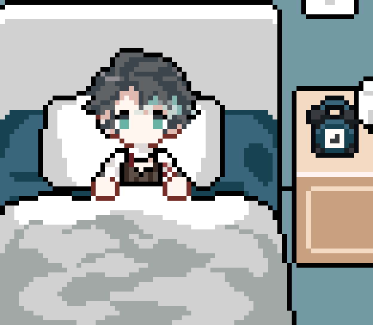
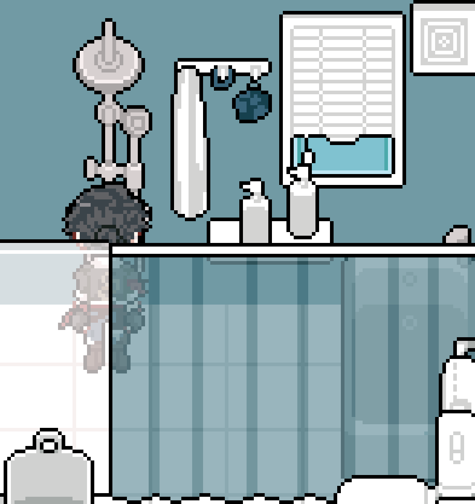
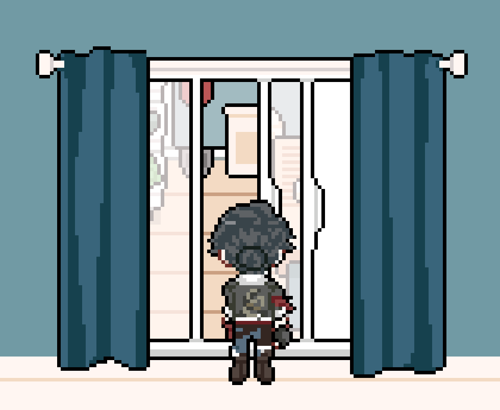
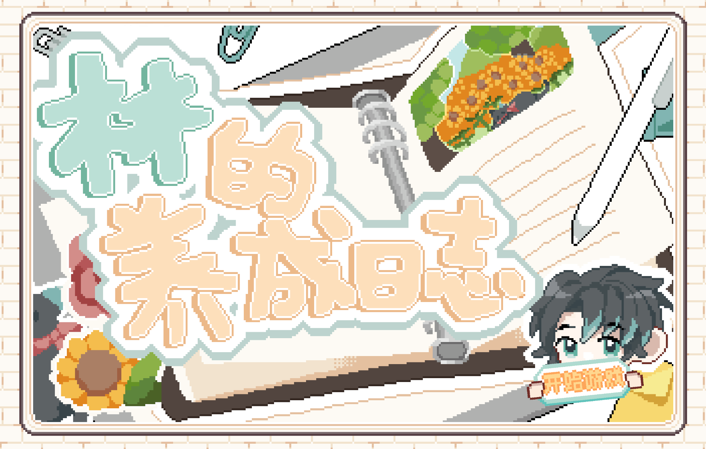
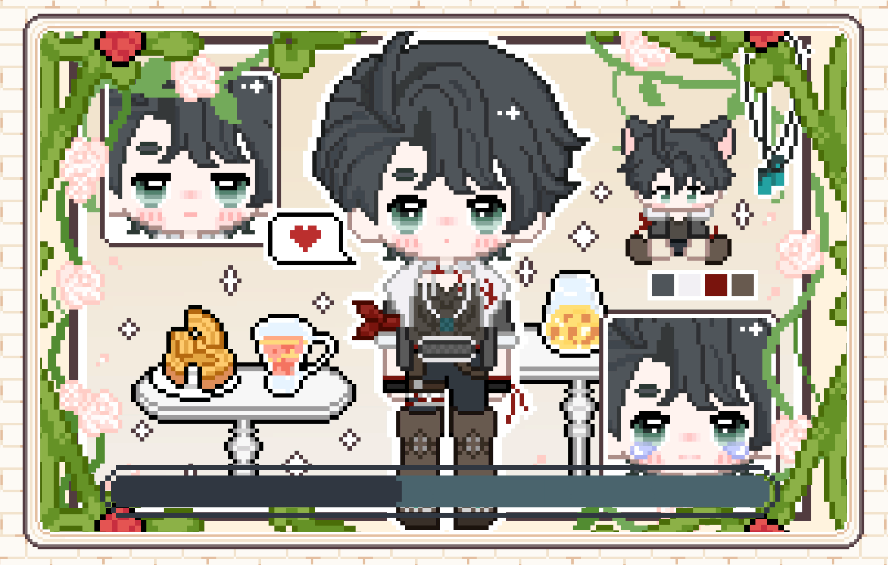
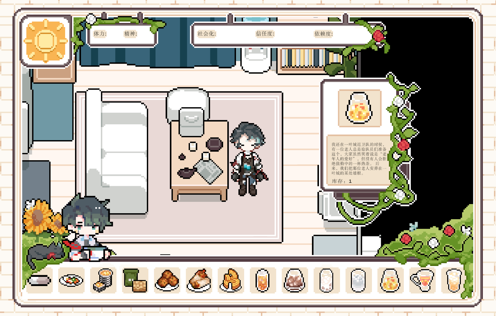
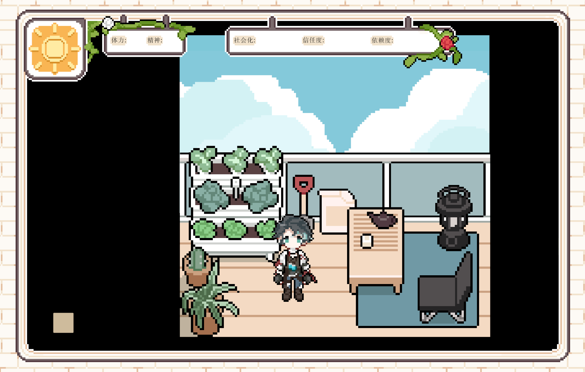

Lynn's Daily Recovery Log
Project Documentation
"Not every story needs another twist. Sometimes, what we want to see is: how someone learns to live again when the crisis is over."
Morning Routine Demo
✿ About Project
A fan-inspired narrative simulation about everyday care, emotional companionship, and slow psychological recovery after the end of the original story.
Design Motivation
Instead of dramatic plot events, I wanted to focus on small moments of connection—shared routines, quiet interactions, and subtle emotional progress.
Project Overview Project Overview
This project is a fan-inspired narrative simulation game centered around the character Lin (Lynn). Rather than continuing or rewriting the original storyline, it explores a parallel possibility: what everyday life might look like after the events of the original narrative.
The design focuses on daily interactions, emotional companionship, and gradual psychological recovery, allowing players to experience a slower and more reflective form of storytelling.
Design Motivation Design Motivation
The original work portrays Lin through intense narrative moments. This project explores a different design perspective: what happens after the story ends.
Rather than focusing on dramatic conflicts, the game examines how a character might gradually rebuild their life through everyday routines.
Core Systems
Energy
Represents Lynn’s physical condition and ability to participate in daily activities.
Mental State
Represents emotional stability and psychological stress over time.
Trust
Measures how much Lynn is willing to rely on and emotionally connect with the player.
Socialization
Represents Lynn’s gradual reconnection with the outside world.
"These systems create a dynamic balance. Protecting Lynn may increase trust but reduce social growth."
Interaction Design Interaction Design

Sleep
Rest & Recover

Bath
Daily Care

Open Balcony
Fresh Air
Time Structure Time Structure
Week 1 — Familiarity
Establish basic trust and daily routines.
Week 2 — Openness
Lynn becomes more comfortable sharing thoughts.
Week 3 — Exploration
Reconnecting with the outside world.
Week 4 — Reflection
Outcomes based on balanced care.
Dependency Ending
If protection is excessive, Lynn may become emotionally dependent.
Recovery Ending
Balanced approach leads to a stable and self-directed life.
Screenshots Screenshot Gallery

Full House Layout

Cover

Loading

Living Room

Balcony
Designer Reflection Designer Reflection
This project allowed me to explore how emotional storytelling can be translated into gameplay systems. One key challenge was balancing narrative intimacy with system clarity.
Through iteration, the four-parameter system became the core framework connecting player actions with emotional outcomes. If the project were expanded further, I would explore more dynamic interactions between parameters.
Overall, the project demonstrates my interest in system design for narrative-driven experiences—especially games that focus on subtle emotional progression rather than dramatic conflict.